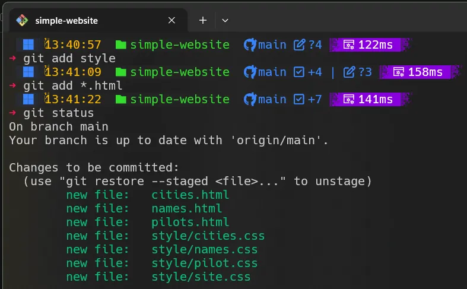

git add
Adicionando arquivos ao projeto
Antes de usar o comando git add, é importante ter arquivos novos no seu projeto.
Este comando é usado para adicionar essas mudanças ao stage, preparando-as para o próximo commit.
Passos para adicionar arquivos ao repositório:
- Faça o download dos arquivos usando este link.
- Descompacte os arquivos e copie e cole no projeto "simple-website".
- Verifique pelo Windows Explorer a estrutura completa do repositório.

A imagem mostra o comando git status indicando arquivos não rastreados (em vermelho).
git add path/to/fileEsse comando é usado quando você deseja preparar um arquivo específico para um commit.
- git add: comando base para preparar arquivos para commit.
- path/to/file: caminho do arquivo que você deseja adicionar ao index.
Nota:
O comando
O comando
git add . adiciona todos os arquivos modificados.
Na imagem, vemos o comando git add aplicado à pasta style.